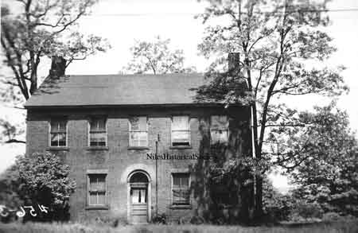

Ward-Thomas Museum


Blachley Home
Ward — Thomas
Museum
Home of the Niles Historical Society
503 Brown Street Niles, Ohio 44446
Click here to become a Niles Historical Society Member or to renew your membership
Click on any photograph to view a larger image, click on image again to zoom into photograph.
|
A 1937 photograph taken of the |
The Blachley Home The Miller Blachley house believed to be the
oldest existing brick house in Niles. Located at 1010 Vienna Ave,
it is listed on the 1834 tax duplicate of Trumbull County. Mr.
Blachley and his two daughters conducted a boarding school. Students
came from as far away as Pittsburgh by water to attend the school.
It was also used as a meeting house by
the Presbyterians after they organized in 1839. |
|
| |
||
|  |
Different views of the Blachley
House. |
PO1.463 |
| |
||
|
Debate brewing over site of old
boarding School.
Gina Buccino Niles Times Staff writer. June 2, 1987 There’s a controversy brewing between the owners of two homes, located at 1010 and 853 Vienna Avenue. The controversy is over which home is the older and which home was once a boarding school operated by Eben Blachley. The Niles Historical Society believes the home at 1010 Vienna Avenue is the older home and that it was the boarding school operated by Blachey. According to court records, the property at 1010 Vienna Avenue, was once owned by Daniel Eaton, brother of James Heaton, who founded the city of Niles. Daniel, who built a blast furnace in Mill Creek in Youngstown, dropped the ‘H’ from his name because he felt it was unnecessary. Daniel, who was a farmer in Weathersfield, also served as a state senator and a state representative. He was an advocate of adopting a national banking system long before one was adopted here in the United States.The property was later deeded to Milley and Eben Blachley and it was during the time the Blachleys owned the property that the brick home was built. Court records indicated the house was built in 1834. The red brick home, which had a fireplace in every room when it was built, was the first meeting place for members of the First Presbyterian Church and it served as a boarding house for girls. Eben Blachley, who operated the boarding school along with his two daughters, attracted girls from as far away as Pittsburgh Pennsylvania. Eben and Milley Blachley also served as elders of the church. During the period of 1847 to the early 1850s, the property was transferred to Edward and Irwin Moore and in 1855, the property was deeded to H.H. Mason, who was the first mayor of Niles. Aside from serving as mayor, Mason also served as president of City National Bank and succeeded his father, Ambrose Mason, as Niles postmaster. The property was then transferred to Henry and Oliver Kyle and in the latter part of the 1860s, the home and property was deeded to William Ward, brother of James Ward, the prominent Niles industrialist. In the late 1870s, the home was deeded to Loren and Austie Rogers and later transferred to Frank Mears. Mears then sold the property to Richard and Marie Stout, who are the owners of the house today (1987). |
||
| |
||
|
Home at 853 Vienna Avenue.
Original front entrance door. |
853 Vienna Avenue The home and property located at 853 Vienna Avenue has a rich history of its own. Daniel Eaton also owned the property during the early 1800s. The property was part of the 201.64 acres that Eaton purchased for $453. Eaton transferred the property to Lewis Heaton and the heirs of Lewis Heaton transferred the property over to Jacob Robeson. According to courthouse records, the brick home was built in 1841 when Lewis Heaton owned the property. During the period of time between 1854 and 1965, the home was deeded to the following people: Jacob Robeson, Danniel Warren, Irwin Moore, C H Andrews, Jacob Stein, Fredericka Stein, Lillie Helen and Henry Giesel, Harry Scrivens, Ruth and Charles Crow, Bert Sohayda, Joseph and Marie Gleeton, F.D. Stein, the Howland Community Church, and Jessie Crawford. The house today (1987) is owned by Jessie Crawford’s son, Samuel and John Delo. Samuel Crawford said he is presently conducting a title search on the home because he believe that it was his home in which Eben Blachly conducted a boarding school and not the home at 1010 Vienna Avenue. He also said he is proud of the fact that his home is one of the oldest in Niles. Crawford said at one time the house was painted yellow and he’s not sure which family painted the house white. The home, of Georgian architecture, has solid walnut stairs and the walls are constructed of brick. The original house had eight rooms, of various sizes, and two large halls which Crawford says, resemble rooms. Crawford is presently trying to restore the house, placing many of the old locks, which were once attached, to the doors. According to Crawford, the house still has the original interior doors. |
|
|
|
||

{kind=link}
{kind=link}
{kind=link}
{kind=link}
{kind=link}